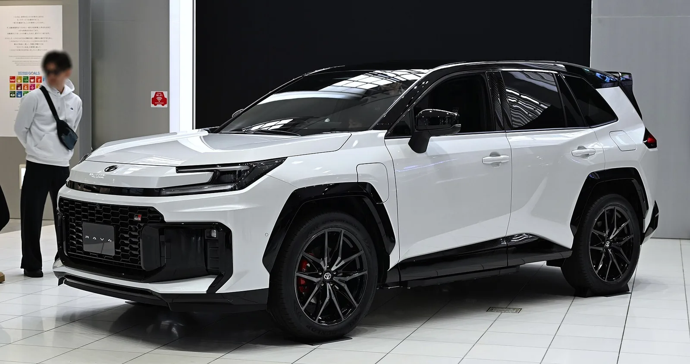
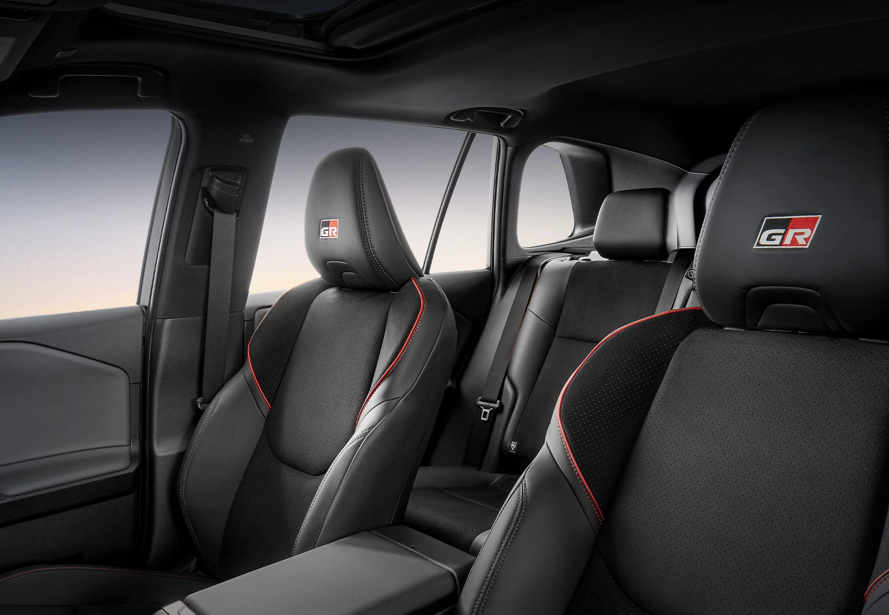
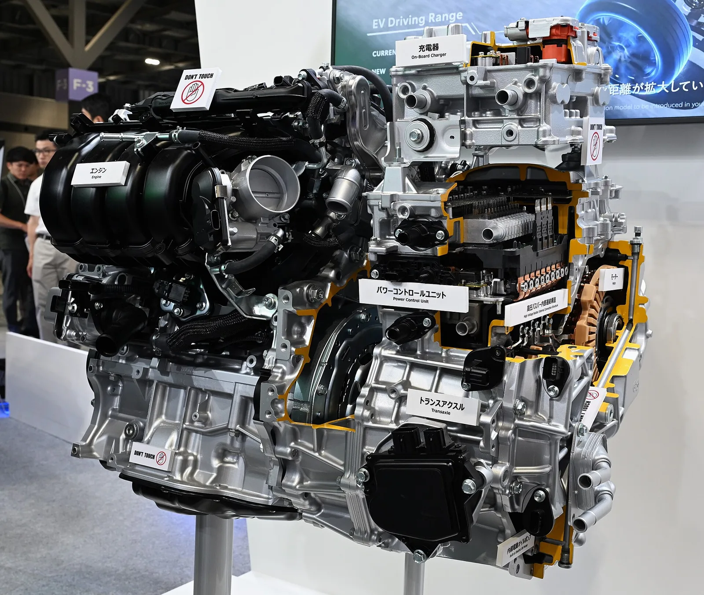

▲ 라브4 PHEV GR 스포츠. 매트릭스 그릴과 검은색 오버펜더로 '세련된 훈남'이 됐다는 평가를 받았다 ⓒ Wikimedia Commons
"정말 잘 만든 차." 카가이가 시승한 결과에 따르면, 토요타 라브4 PHEV를 몰아본 소감은 이 한 문장으로 요약된다. 가속력은 일품, 승차감은 예술이라는 평가까지 나왔다. 6,270만원이라는 가격표가 붙은 이 SUV가 실제로 어떤 차인지, 카가이 시승기와 토요타코리아 공식 제원을 근거로 뜯어봤다.
1. 디자인·외관 — '훈남'이 된 라브4
카가이가 시승한 결과에 따르면, 라브4 PHEV GR 스포츠의 외관은 이전 세대와 확연히 달라졌다. GR 전용 매트릭스 그릴과 검은색 오버펜더, 20인치 전용 휠, 리어 스포일러가 더해지면서 "세련된 훈남으로 거듭났다"는 평가를 받았다. 특히 블랙 루프와 화이트 바디의 투톤 조합, 도어 하단까지 이어지는 검은색 클래딩이 기존 라브4보다 훨씬 다부진 인상을 만든다는 평이다.

▲ 리어 스포일러와 GR 전용 20인치 휠이 적용된 라브4 PHEV 후측면 ⓒ Wikimedia Commons
후면부는 PHEV 전용 배지와 일체형 리어 콤비네이션 램프로 정리됐다. 전반적으로 이전 세대의 각진 오프로드 이미지 대신, 고성능 SUV에 가까운 조형을 앞세운 모습이다.

▲ 같은 라브4 PHEV라도 XSE 트림은 GR 스포츠 대비 한결 절제된 외관을 갖췄다 ⓒ HJUdall, Wikimedia Commons (CC0)
같은 라브4 PHEV 라인업이라도 GR 스포츠와 XSE 트림의 인상은 꽤 다르다. GR 스포츠가 블랙 오버펜더와 전용 그릴로 공격적인 이미지를 강조했다면, XSE는 크롬 포인트와 차분한 바디킷으로 상대적으로 얌전한 인상을 준다. 시승기의 '훈남'이라는 평가는 GR 스포츠 기준이며, XSE는 좀 더 무난한 선택지에 가깝다.
2. 실내 — GR 시트는 합격, 소재는 아쉬움
실내에는 GR 로고가 새겨진 스포츠 시트와 레드 스티치가 적용됐고, 12.3인치 디지털 계기판과 12.9인치 센터 디스플레이가 탑재됐다. 다만 카가이가 시승한 결과에 따르면 "6천만원이 넘는 높은 가격에 비해 실내 소재가 너무 평범하다"는 지적도 함께 나왔다. 곳곳에 사용된 플라스틱 재질감이 가격대에 비해 아쉽다는 것이다.

▲ GR 로고와 레드 스티치가 적용된 스포츠 시트. 논슬립 스웨이드 소재가 사용됐다 ⓒ 토요타코리아
디스플레이 구성 자체는 최신 트렌드에 맞춰 대형화됐지만, 시트와 스티어링 휠 등 손이 직접 닿는 부분의 마감이 고급감을 좌우하는 요소인 만큼 이 부분은 호불호가 갈릴 수 있는 대목이다.
3. 주행감·가속력 — 벤츠와 BMW를 한 차에 담다
카가이가 시승한 결과에 따르면, 라브4 PHEV의 주행 감각은 "벤츠의 탄탄하고 부드러운 승차감과 BMW의 강력한 주행성능을 결합"한 듯한 느낌으로 묘사됐다. 코너링 구간에서 차체 흔들림이 거의 없고, 스티어링 감각이 상쾌하다는 평가다. 실제로 종합 평가에서는 운전 재미와 승차감 항목에 99점이라는 높은 점수가 매겨졌다.
| 시스템 총출력 | 329마력 |
|---|---|
| 0-100km/h 가속 | 5.1초 |
| 차체중량 | 2,010kg |
| 구동방식 | 사륜구동(E-FOUR) |
5.1초라는 가속 수치는 준중형 SUV급 차체를 감안하면 상당히 빠른 편으로, 전기모터의 즉각적인 토크 개입이 체감 가속력을 끌어올리는 것으로 풀이된다.
4. PHEV 파워트레인·연비 — 22.68kWh가 만드는 차이
라브4 PHEV의 심장은 2.487cc 직렬 4기통 엔진(189마력)과 고출력 전기모터를 결합한 시스템이다. 여기에 22.68kWh 리튬이온 배터리가 더해져 EV 모드로만 복합 77km(도심 85km, 고속 67km)를 달릴 수 있다. 국내에 흔한 PHEV의 배터리 용량이 10~15kWh 수준인 점을 감안하면 상당히 큰 편이다.

▲ 2.5L 엔진과 전기모터, 파워 컨트롤 유닛으로 구성된 라브4 PHEV 하이브리드 시스템 단면 ⓒ Wikimedia Commons
| 엔진 | 2.5L 직렬 4기통(189마력/6,000rpm) |
|---|---|
| 최대토크 | 23.8kg·m(4,300~4,900rpm) |
| 배터리 | 22.68kWh 리튬이온 |
| EV 주행거리 | 복합 77km / 도심 85km / 고속 67km |
| 복합연비 | 15.3km/ℓ(가솔린) · 4.3km/kWh(전기) |
| 급속충전 | 50kW급, 10~80% 약 35분 |
| 변속기 | 무단자동변속기(e-CVT) |
50kW급 DC 급속충전을 지원한다는 점도 눈에 띈다. PHEV는 배터리 용량이 작아 완속 충전만 지원하는 경우가 많은데, 급속충전을 지원한다는 것은 그만큼 전기 주행을 실제로 활용하라는 설계 의도로 해석된다. 라브4 PHEV의 상세 트림별 가격과 구성은 토요타코리아 홈페이지에서 확인할 수 있다. 바로가기
5. 경쟁모델 비교 — 투싼·스포티지 하이브리드와는 급이 다르다
다만 라브4 PHEV의 가격은 6,270만원으로, 같은 준중형 SUV 체급인 현대 투싼 하이브리드(약 3,900만원대)나 기아 스포티지 하이브리드(2WD 프레스티지 약 3,356만원~시그니처 약 3,950만원)와 비교하면 최대 2,000만원 이상 차이가 난다. 다만 두 국산 모델은 일반 하이브리드로, 순수 전기 주행이 불가능하다는 점에서 직접적인 스펙 비교보다는 '체급 대비 가격'이라는 관점에서 접근하는 것이 맞다.

▲ 현대 투싼 하이브리드. 라브4 PHEV와 체급은 같지만 가격은 2천만원 가까이 낮다 ⓒ 현대자동차
| 모델 | 파워트레인 | 복합연비 | 가격 |
|---|---|---|---|
| 라브4 PHEV GR 스포츠 | 2.5L+모터, 329마력, EV 77km | 15.3km/ℓ(+전기) | 6,270만원 |
| 투싼 하이브리드 | 1.6T+모터, 약 230마력대 | 약 16km/ℓ대 | 약 3,900만원대 |
| 스포티지 하이브리드 | 1.6T+모터 하이브리드 | 14.3~16.3km/ℓ | 3,356만~3,950만원 |
결국 라브4 PHEV의 경쟁 상대는 같은 체급의 하이브리드보다, EV 주행이 가능한 수입 PHEV SUV군에 가깝다는 평가가 나온다. 순수 전기 주행거리와 급속충전 지원, 329마력이라는 출력까지 감안하면 '하이브리드 SUV'가 아니라 '플러그인 SUV' 카테고리에서 값을 매겨야 한다는 것이다.
다만 투싼·스포티지 하이브리드와의 3파전에서 라브4 PHEV가 절대적으로 유리한 것만은 아니다. 두 국산 모델은 3천만원대 후반부터 시작해 진입 장벽이 낮고, 국내 서비스망과 부품 수급에서도 수입차 대비 이점이 크다. 반면 라브4 PHEV는 EV 주행 77km·329마력이라는 수치로 성능과 전기 주행 효율을 동시에 잡았지만, 그만큼 가격 부담과 수입차 특유의 정비 접근성 문제를 감수해야 한다. 결국 선택은 '체급 대비 가성비'를 볼지, '전기 주행이 가능한 고성능'을 볼지에 달려 있다.
국내 보조금 측면에서도 셈법이 다르다. 환경부 전기차 보조금은 순수 전기차(BEV)와 수소차에만 적용되며, 라브4 PHEV를 포함한 플러그인 하이브리드는 해당되지 않는다. 대신 하이브리드차에 준하는 세제 혜택인 개별소비세 감면(최대 70만원, 2026년 12월 31일까지 적용)을 받을 수 있지만, 취득세 감면은 이미 2024년 말 일몰돼 사실상 혜택이 크지 않다. 수백만원대 국고보조금이 나오는 순수 전기차와 비교하면 초기 구매 부담을 낮추는 요인은 제한적인 셈이며, 라브4 PHEV의 실질적인 가치는 보조금이 아니라 EV 주행거리로 아낄 수 있는 유류비와 주행 성능에서 찾아야 한다는 평가다.
✅ 라브4 PHEV, 이것만은 확인하세요
· 시스템 총출력 329마력, 0-100km/h 5.1초
· 배터리 22.68kWh, EV 주행거리 복합 77km
· 복합연비 15.3km/ℓ, 50kW 급속충전 지원
· 가격은 XSE 6,250만원 / GR 스포츠 6,270만원
· 투싼·스포티지 하이브리드 대비 2천만원 이상 비싸지만 EV 주행이 가능한 PHEV
정리
카가이가 시승한 결과에 따르면, 라브4 PHEV는 벤츠급 승차감과 BMW급 가속력을 준중형 SUV 체급에 담아낸 차라는 평가를 받았다. 다만 6천만원이 넘는 가격에 비해 실내 소재가 평범하다는 지적도 함께 나온 만큼, 완벽한 차라기보다는 '전기 주행이 가능한 고성능 SUV'라는 새로운 카테고리에서 값을 매겨야 할 모델로 보인다. 투싼·스포티지 하이브리드보다 비싸지만, 그만큼 EV 주행거리와 가속력에서 확실한 차별점을 갖췄다.